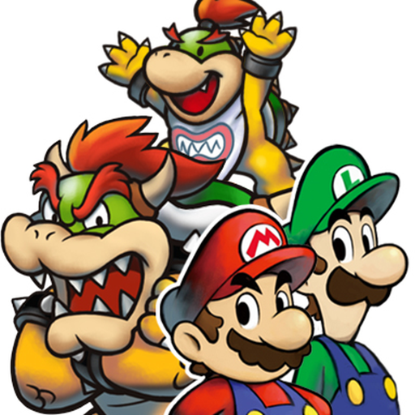

 Mario & Luigi - Bowser's Inside Story + Bowser Jr.'s Journey
Details
| Playtime | Not Played |
| Last Activity | Never |
| Added | 21/02/2024 3:22:44 |
| Modified | 20/05/2024 22:32:56 |
| Completion Status | Not Played |
| Library | Playnite |
| Source | |
| Platform | Nintendo 3DS |
| Release Date | 11/02/2009 |
| Community Score | |
| Critic Score | 87 |
| User Score | 0 |
| Genre | RPG |
| Developer | AlphaDream |
| Publisher | Nintendo |
| Feature | Single Player |
| Links | |
| Tag | |
Description
The game's plot involves Mario and Luigi being inhaled into the body of their long-time nemesis, Bowser. The Mario brothers learn to help Bowser, who is unaware of their presence inside his body, to combat their mutual enemy Fawful, who has taken over the Mushroom Kingdom. The gameplay focuses on the trio's cooperation, with specific abilities to solve puzzles and fight enemies. Similarly to its predecessors, its role-playing style emphasizes a turn-based battle system focused on timing accuracy, and it is almost entirely comedic in nature.
The game was both critically and commercially successful, with many fans and critics considering it to be the best game in the series. It is the second best-selling Mario role-playing game, with more than four million copies sold worldwide by April 2011.
A sequel, titled Mario & Luigi: Dream Team, was released for the Nintendo 3DS on July 12, 2013. A remake for the Nintendo 3DS, titled Mario & Luigi: Bowser's Inside Story + Bowser Jr.'s Journey, was released in Japan on December 27, 2018, in North America on January 11, 2019, in Europe on January 25, 2019, and in Australia on January 26, 2019.
Remake
On March 8, 2018, Nintendo revealed a Nintendo 3DS remake of the game, entitled Mario & Luigi: Bowser's Inside Story + Bowser Jr.'s Journey. The remake, following on from the success of the 3DS remake of Mario & Luigi: Superstar Saga, features updated graphics, remastered music, quality-of-life improvements, and significant changes in gameplay, such as the reworking of special moves in combat. While the majority of the game was handled in-house at AlphaDream, the "Giant Bowser" boss fights were assisted by developer Arzest and are now presented as full 3D models. In addition, the game also involves a new side story entitled Bowser Jr.'s Journey, which focuses on the story of Bowser Jr. during the events of Bowser's Inside Story, playing similar to the Minion Quest side story found in the Superstar Saga remake. It was released in Japan in December 2018, with a worldwide release following in January 2019. Additionally, it is the final Mario game published for the Nintendo 3DS family of systems.
In an interview with Game Informer shortly after the game's launch, AlphaDream producer Yoshihiko Maekawa and Nintendo producer Akira Otani stated that the main reason to remake Bowser's Inside Story for the 3DS instead of the Nintendo Switch was due to timing; they could easily build the game based on existing assets and, more critically, they wanted to retain the dual-screen elements of the original title such as the minigames and Giant Battles. The reason they skipped over a remake of Partners in Time was because they wanted to remake the best received title in the series. Additionally, they wanted to take the opportunity to explore the parent-child dynamics between Bowser and Bowser Jr., which manifested in Bowser Jr.'s Journey.